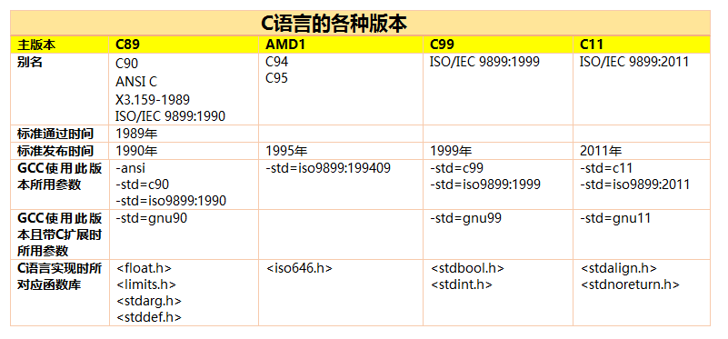
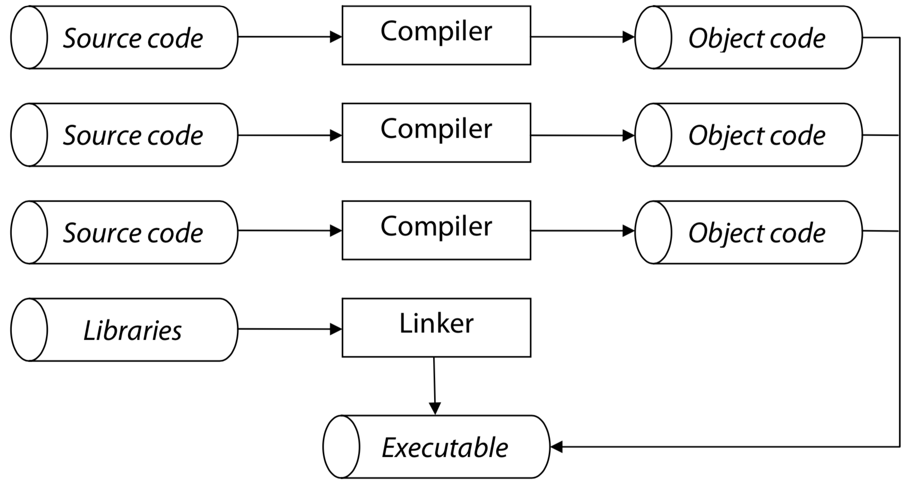

-
C Standards

【K&R C】 1978 年，Dennis Ritchie 和 Brian Kernighan 合作推出了《The C Programming Language》的第一版(按照惯例，经典著作一定有简称，
该著作简称为 K&R)，书末的参考指南 (Reference Manual) 一节给出了当时 C 语言的完整定义，成为那时 C 语言事实上的标准，人们称之为 K&R C。
从这一年以后，C 语言被移植到了各种机型上，并受到了广泛的支持，使 C 语言在当时的软件开发中几乎一统天下。
【C89 (ANSI C)】 随着 C 语言在多个领域的推广、应用，一些新的特性不断被各种编译器实现并添加进来。于是，建立一个新的“无歧义、于具体平台无关的
C 语言定义” 成为越来越重要的事情。1983 年，ASC X3(ANSI 属下专门负责信息技术标准化的机构，现已改名为 INCITS)成立了一个专门的技术委员会J11
(J11 是委员会编号，全称是 X3J11)，负责起草关于 C 语言的标准草案。1989 年，草案被 ANSI 正式通过成为美国国家标准，被称为 C89 标准。
【C90 (ISO C)】 随后， 《The C Programming Language》第二版开始出版发行，书中内容根据 ANSI C(C89)进行了更新。1990 年，在
ISO/IEC JTC1/SC22/WG14 (ISO/IEC 联合技术第 I 委员会第 22 分委员会第 14 工作组) 的努力下，ISO 批准了 ANSI C 成为国际标准。
于是 ISO C(又称为 C90) 诞生了。除了标准文档在印刷编排上的某些细节不同外，ISO C(C90) 和 ANSI C(C89) 在技术上完全一样。
【C95】 之后，ISO 在 1994、1996 年 分别出版了 C90 的技术勘误文档，更正了一些印刷错误，并在1995 年通过了一份 C90 的技术补充，对 C90
进行了微小的扩充，经过扩充后的 ISO C 被称为 C95。
【C99】 1999 年，ANSI 和 ISO 又通过了最新版本的 C 语言标准和技术勘误文档，该标准被称为 C99 。这基本上是目前关于 C 语言的最新、最权威的定义了。
现在，各种 C 编译器都提供了 C89(C90) 的完整支持，对 C99 还只提供了部分支持，还有一部分提供了对某些 K&R C 风格的支持。
目前主要的C语言规范有c89(c90)， c95(94)和c99。C89是最早的C语言规范，于89年提出，90年先由美国国家标准局推出ANSI版本，后来被接纳为ISO国际标准
(ISO/IEC 9899:1990),因而有时也称为c90。但在94和96年分别对c90进行了两次错误修正，gcc支持的是修正后的c89(90)版本的C语言规 范。在95年提出过对
90版规范的修订案，称为 C95或者AMD1。gcc也支持c95规范。最新的一次C规范修订在99年制定（ISO/IEC 9899:1999），即常称的C99规范。在2001年对C99
的错误进行了修正，gcc支持的修正后的c99规范，但是到目前为止，gcc还没有完成对c99规范的完全支持。
另附：C语言起源
【起源】 C 语言最早的原型是 ALGOL 60 1963 年，剑桥大学将其发展成为 CPL(Combined Programing Language)。 1967 年，剑桥大学的
Matin Richards 对 CPL 语言进行了简化，产生了 BCPL 语言。 1970 年，美国贝尔实验室(Bell Labs)的 Ken Thompson 将 BCPL 进行了修改，
并取名叫做 B 语言，意思是提取 CPL 的精华(Boiling CPL down to its basic good features)。并用 B 语言写了第一个 UNIX 系统。 1973 年，
AT&T 贝尔实验室的 Dennis Ritchie(D.M.RITCHIE) 在 BCPL 和 B 语言的基础上设计出了一种新的语言，取 BCPL 中的第二个字母为名，这就是大名鼎鼎的
C 语言。随后不久，UNIX 的内核(Kernel) 和应用程序全部用 C 语言改写，从此，C 语言成为 UNIX 环境下使用最广泛的主流编程语言。
-
GCC supported Language Standards
Reference: https://gcc.gnu.org/onlinedocs/gcc/Standards.html
C89=C90：gcc选项是：-ansi, -std=c90 or -std=iso9899:1990;
带了GNU扩展的：-std=gnu90
C94=C95：gcc选项：-std=iso9899:199409
C99：gcc选项：-std=c99 or -std=iso9899:1999
未完成C99标准之前，叫做C9X
带了GNU扩展的：-std=gnu99
C11：gcc选项是-std=c11 or -std=iso9899:2011
未完成C11标准之前，叫做C1X
带了GNU扩展的：-std=gnu11
gcc 4.7之后，才支持c11, -std=c1x GCC 4.6, -std=c11 GCC 4.7
-
Environments
translation environments= in which source code is converted into executable machine instructions
execution environments= in which the code actually runs
translation environment can be different from execution environment. for example, cross-compilers run on one machine but
produce executable code that will be run on a different type of machine.
nor is an operating system a requirement. the standard also discusses freestanding environments, in which there is no operating system.
-
Translation
The translation phase consists of several steps:
First, each of the source files that make up a program are individually converted to object code via the compilation process.
Then, the various object files are tied together by the linker to form a single, complete executable program.
The linker also brings in any functions from the standard C libraries used in the program, and it also search personal libraries as well.

The compilation process itself consists of several phases:
* preprocessor = text manipulation on source code (substitute #define; read #include files)
* parse = source code is parsed to determine the meanings of its statements, object code is then generated
* optimizer is optional till your program is fully debugged
File Name Conventions:
* source code: *.c
* header file: *.h
* object file: *.o (Unix Systems); *.obj (Windows)
1. To compile and link a C program that is contained entirely in one source file:
cc program.c
Produces an executable program called a.out. An object file called program.o is produced, but deleted after the linking is complete.
2. To compile and link several C source files:
cc main.c sort.c lookup.c
3. To compile one C source file and link it whit existing object files:
cc main.o lookup.o sort.c
4. To compile a single C source file and produce an object file (in this case, called program.o) for later linking:
cc -c program.c
5. To compile several C source files and produce an object file for each:
cc -c main.c sort.c lookup.c
6. To link several object files:
cc main.o sort.o lookup.o
-
Lexical Rules
The Lexical Rules = govern tokens of the source
An ANSI C Program = declarations + functions
functions=define the work to be performed
declarations=describe the functions and/or the kind of data (sometimes data values themselves) on which the functions operate
-
Characters
Standard does not require any specific character set be used in a C environment.
Standard does require the character set to have:
* a~z A~Z 0~9
* ! " # % ' ( ) * + , - . / :
* ; < > = ? [ ] \ ^ _ { } | ~
* white space character = newline character + space + tab + vertical tab + form feed
* trigraphs = sequence of characters that represents another character
??( [ ??< { ??= #
??) ] ??> } ??/ \
??! | ??' ^ ??- ~
* escape sequences (K&R C defined a few, ANSI C added a few more)
\? Used when writing multiple question marks to prevent them from being interpreted as trigraphs.
\* Used to get quotation marks inside of string literals.
\' Used to write a character literal for the character '.
\\ Used when a backslash is needed to prevent its being interpreted as a character escape.
\a Alert character. This rings the terminal bell or produces some other audible or visual signal. (ANSI C)
\b Backspace character.
\f Formfeed character.
\n Newline character.
\r Carriage return character.
\t Horizontal tab character.
\v Vertical tab character. (ANSI C)
\ddd ddd represents from one to three octal digits. This escape represents the character whose representation has the given octal value.
\xddd Like the above, except that the value is specified in hexadecimal. (ANSI C)
Note: Trigraphs are being ignored by compilers now by default.
For example:
compiling on mac with clang (cc), printf("\"blunder??!??\""); will print the result "blunder??!??".
if compiling with -std89: cc test.c -std=c89, there is a warning: test.c:4:20: warning: trigraph converted to '|' character [-Wtrigraphs]
printf("\"blunder??!??\""); will print the result "blunder|??".
checking the __STDC_VERSION__ gives you the default c version used:
#ifdef __STDC_VERSION__
printf("%d", __STDC_VERSION__);
#endif
will print 201112 on my mac （也就是c11）. The __STDC_VERSION__ is a long value.
But, if I compile with -std=c89 specified. The macro __STDC_VERSION__ is not defined.
另外，有关课后练习4，做了一些关于\ddd和\xddd的测试：
其实\xddd中，x之后十六进制数的个数是不限的，而\ddd是很明确的1，2或者3个。
char *c = "abc\60"; /* 字符串abc0，因为\60是换成byte正好是ASCII的0，十进制的48 */
char *c2 = "\0614"; /* 字符串14，可以看出\ddd转到第三个就停止了 */
char *c21 = "\x314defYYYhijkl"; /* 打出来的是：颵YYhijkl，虽然hex数量不限，不过遇到非十六进制的字符就停止了 */
char c4 = "\x310000456"; /* 而这里因为都是十六进制字符，所以整个变成了byte */
char c3 = '\61'; /* 字符1 */
char c31 = '\x31'; /* 字符1 */
int d = '\160'; /* 数字112 */
int d2 = '\1160'; /* 数字20016，不知道怎么来的 */
int e = '\x1234'; /* 0x34 = 52 */
int f = '\x234'; /* 0x34 = 52 */
int g = '\x34'; /* 0x34 = 52 */
printf("c=%s_c2=%s_c21=%s_c3=%c_c31=%c_c4=%s\n", c, c2, c21, c3, c31, &c4);
printf("d=%d_d2=%d_e=%d_f=%d_g=%d\n", d, d2, e, f, g);
再用operator and expression一章中Arithmetic Conversions一节的程序打印了一下各位的bit:
c4变成了不知道什么：0x12；0b0001 0010
e, f, g都只留下来后面两位：0x34；0b0011 0100
-
Comments
C comments begin with the characters /*, end with the characters */, and may contain anything except */ in between.
Each comment is stripped from the source code by preprocessor and replaced by a single space.
Only the first variable is initialized:
x1 = 0; /***********************
x2 = 0; ** Initialize the **
x3 = 0; ** counter variables. **
x4 = 0; ***********************/
-
Free Form Source Code
there are no rules governing where statements can be written, how many statements may appear on a line,
where spaces should be put, or how many spaces can occur. Thus, the following statements are equivalent:
1: y=x+1;
2: y = x + 1 ;
3: y = x
+
1;
The first three are equivalent, the last one is illegal:
int x;
int x;
int/*comment*/x;
intx;
-
Identifiers
identifiers=names for variables, functions, types and so forth.
identifiers=upper and lowercase letters, digits, and the underscore character (cannot begin with digits)
reserved keywords
auto do goto signed unsigned
break double if sizeof void
case else int static volatile
char enum long struct while
const extern register switch
continue float return typedef
default for short union
C is case sensitive, meaning abc and ABC are different identifiers. Standard allows C implementation to ignore characters after first 31.
It also allows implementation to restrict identifiers for external names to six monocase characters.
Extern Example (// single line comment is not ANSI standard):
File 1:
// Explicit definition, this actually allocates
// as well as describing
int Global_Variable;
// Function prototype (declaration), assumes
// defined elsewhere, normally from include file.
void SomeFunction(void);
int main(void) {
Global_Variable = 1;
SomeFunction();
return 0;
}
File 2:
// Implicit declaration, this only describes and
// assumes allocated elsewhere, normally from include
extern int Global_Variable;
// Function header (definition)
void SomeFunction(void) {
++Global_Variable;
}
In this example, the variable Global_Variable is defined in File 1. In order to utilize the same variable in File 2,
it must be declared. Regardless of the number of files, a global variable is only defined once, however,
it must be declared in any file outside of the one containing the definition.
If the program is in several source files, and a variable is defined in file1 and used in file2 and file3,
then extern declarations are needed in file2 and file3 to connect the occurrences of the variable.
The usual practice is to collect extern declarations of variables and functions in a separate file,
historically called a header, that is included by #include at the front of each source file.
The suffix .h is conventional for header names.
-
Program Style
sloppy programs are quick and easy to write but difficult to read and understand later...
e.g. Mystery Program 1:
#include
main(t,_,a)
char *a;
{return!0<t?t<3?main(-79,-13,a+main(-87,1-_,
main(-86, 0, a+1 )+a)):1,t<_?main(t+1, _, a ):3,main ( -94, -27+t, a
)&&t == 2 ?_<13 ?main ( 2, _+1, "%s %d %d\n" ):9:16:t<0?t<-72?main(_,
t,"@n'+,#'/*{}w+/w#cdnr/+,{}r/*de}+,/*{*+,/w{%+,/w#q#n+,/#{l,+,/n{n+\
,/+#n+,/#;#q#n+,/+k#;*+,/'r :'d*'3,}{w+K w'K:'+}e#';dq#'l q#'+d'K#!/\
+k#;q#'r}eKK#}w'r}eKK{nl]'/#;#q#n'){)#}w'){){nl]'/+#n';d}rw' i;# ){n\
l]!/n{n#'; r{#w'r nc{nl]'/#{l,+'K {rw' iK{;[{nl]'/w#q#\
n'wk nw' iwk{KK{nl]!/w{%'l##w#' i; :{nl]'/*{q#'ld;r'}{nlwb!/*de}'c \
;;{nl'-{}rw]'/+,}##'*}#nc,',#nw]'/+kd'+e}+;\
#'rdq#w! nr'/ ') }+}{rl#'{n' ')# }'+}##(!!/")
:t<-50?_==*a ?putchar(a[31]):main(-65,_,a+1):main((*a == '/')+t,_,a\
+1 ):0<t?main ( 2, 2 , "%s"):*a=='/'||main(0,main(-61,*a, "!ek;dc \
i@bK'(q)-[w]*%n+r3#l,{}:\nuwloca-O;m .vpbks,fxntdCeghiry"),a+1);}
What the hell does it do exactly?
Some suggested coding habbits:
1. A blank line separates statements into logical groups based on their functionality.
The reader can easily skip an entire group without having to read each line of code to see where the group logically ends
2. The parentheses in if and related statements are part of the statement, not part of the expression being tested.
Thus I use spaces to separate the parentheses from the expression so that the expression stands out more clearly.
The same for function prototypes.
3. Spaces are used around most operators in order to make expressions more readable. Sometimes I omit spaces in
complex expressions to show the grouping of the subexpressions.
4. Statements that are nested within other statements are indented to show this relationship. It is easier to
line up related statements by using tabs to indent rather than spaces.
It is important to use a large enough indent to be able to visually be able to visually locate matching parts
of the program over a page of code. Two or three spaces are not enough.
Some people avoid tabs because they think tabs indent statements too much. In complex functions with deeply
nested statements, the large tab indent means that there is little space left on the line to write the statements.
However if the function is that complex, it would probably benefit from being broken into smaller functions,
one of which contains the statements that were formerly nested so deeply.
5. Most comments are written in blocks, which makes them stand out visually form the code.
They are easier for the reader to find, and easier to skip.
6. In the definition of a function, the return type appears on a separate line before the function name,
which appears at the beginning of the next line. To locate the definition of a function, search for
the function name at the beginning of a line.
-
Program Style